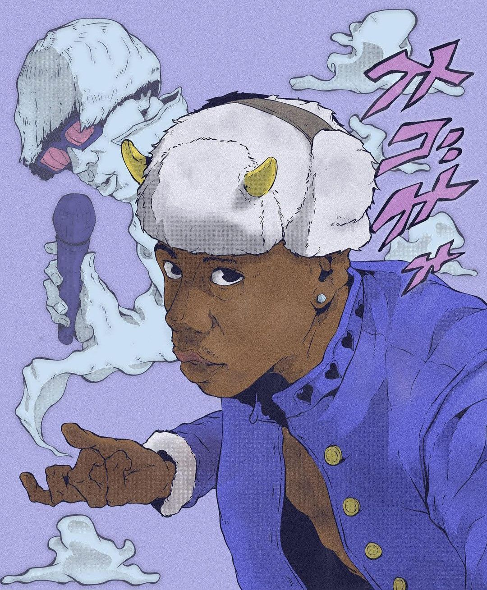

Sobre Tyler
Nascido na Califórnia em 1991, Tyler Gregory Okonma começou a produzir músicas na adolescência. Ganhou destaque como líder do coletivo Odd Future, um grupo que sacudiu o rap alternativo no início dos anos 2010 com sua energia rebelde e som sombrio. Essa fase inicial, marcada por letras controversas e uma atitude provocadora, transformou Tyler de um artista underground em um fenômeno da internet, pavimentando o caminho para uma carreira solo extremamente inovadora.
Estilo Musical
A discografia de Tyler é marcada por uma constante reinvenção. Seu álbum de estreia, Goblin (2011), trouxe o hype de Yonkers, mas também muitas críticas por sua abordagem chocante. Passando por Cherry Bomb com péssima popularidade e o aumento de críticas e a partir de Flower Boy (2017), ele alcançou o respeito dacrítica e um sucesso comercial, com um som mais introspectivo que mescla jazz e soul. Essa nova fase consolidou sua maturidade artística, com Igor (2019) e Call Me If You Get Lost (2021) vencendo o Grammy de Melhor Álbum de Rap e mostrando seu amadurecimento como produtor e compositor. Atualmente, Tyler ganhou o grammy de melhor cover do ano em seu álbum "Chromakopia". Toda a sua trajetória mostra o porquê seu nome é Tyler, the creator.